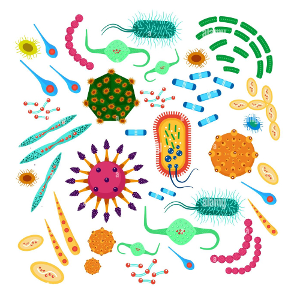
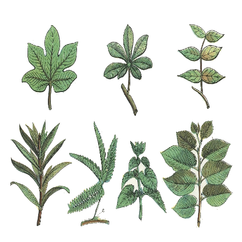
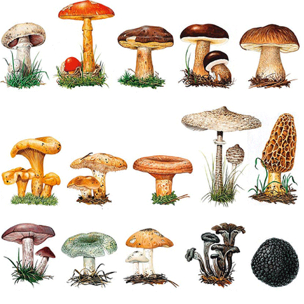

Informacion Basica de la
"Biología"
¿Que es la biologia?
La biología es la ciencia natural que estudia todo lo relacionado con la vida y lo orgánico, incluyendo los procesos, sistemas, funciones, mecanismos u otros caracteres biológicos subyacentes a los seres vivos
Biología como una ciencia multidisciplinaria
La biología como ciencia es amplia de acuerdo a su estudio, ya que
requiere la especialización de las ramas que la auxilian, por mencionar
tenemos a la Botánica que se encarga del estudio de las plantas, así
también a la Zoología que estudia a los animales, Micología que se
centra en los hongos, Microbiología en el estudio de los organismos
microscópicos, estos por mencionar algunos, sine embargo hay mas
ciencias que están en torno a la ciencia de la vida.
Objetivo general
Identificar las características y
manifestaciones de los seres vivos y distinguir los
procesos biológicos fundamentales que se realizan
en las células y los organelos celulares a través de
relacionar las estructuras con las funciones, para
valorar su importancia en el cuerpo humano y
fomentar acciones en su cuidado.
Ramas de la "Biología"
Zoología
La zoología es la disciplina biológica que se encarga del estudio científico de los animales.

Microbiología
La microbiología es la ciencia encargada del estudio y el análisis de los microorganismos.

Botánica
La botánica o fitología es la rama de la biología que estudia las plantas bajo todos sus aspectos.

Micología
La micología o micetología es la ciencia biológica que se dedica al estudio de los hongos.
Datos curiosos